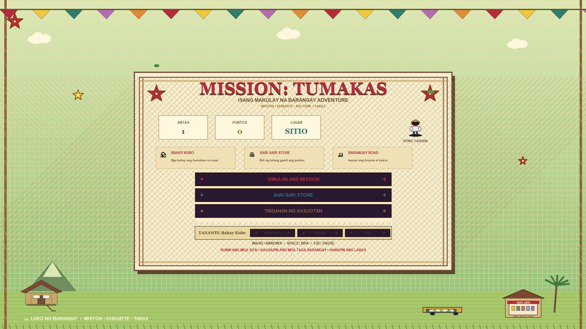
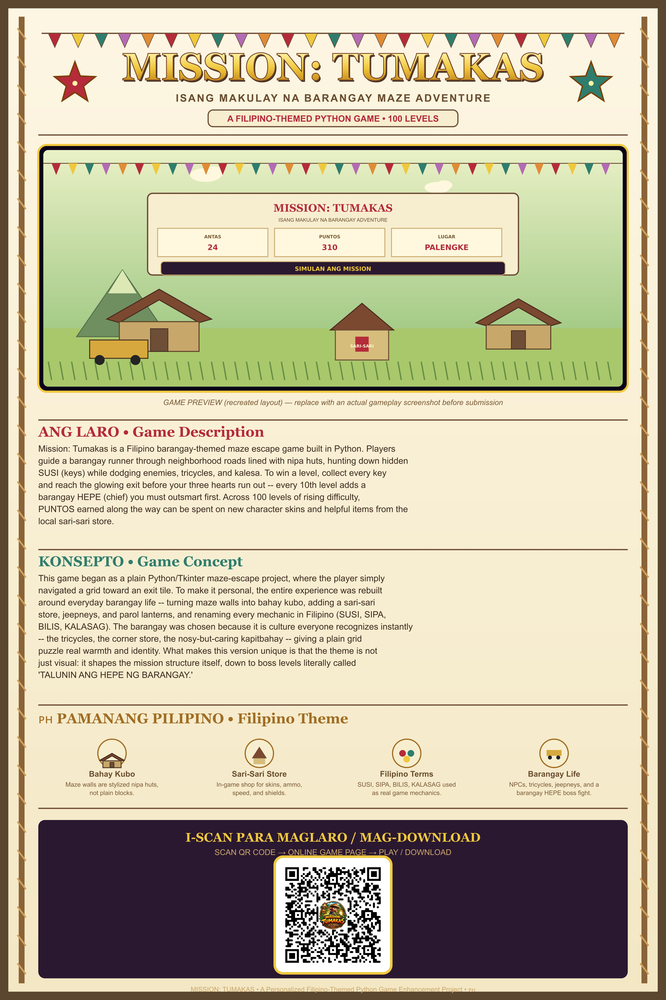

Isang makulay na barangay maze adventure — collect every susi, outrun the hepe, and reach the labasan.
A Filipino-themed Python game · 100 levels
Mission: Tumakas is a Filipino barangay-themed maze escape game built in Python. You guide a barangay runner through neighborhood roads lined with nipa huts, hunting down hidden susi (keys) while dodging enemies, tricycles, and kalesa. To clear a level you must collect every key and reach the glowing exit before your three hearts run out — and every 10th level puts a barangay hepe in your way that you have to outsmart first. Across 100 levels of rising difficulty, the puntos you earn can be spent on new character skins and helpful items at the local sari-sari store.
This started as a plain Python maze-escape project where the player just moved across a grid toward an exit tile. To make it my own, the whole experience was rebuilt around everyday barangay life: maze walls became bahay kubo, a sari-sari store was added as the in-game shop, and jeepneys and parol lanterns fill the streets. Every mechanic was renamed in Filipino — susi, sipa, bilis, kalasag — so the language of the game matches its world. I chose the barangay because it is culture every Filipino recognizes instantly: the tricycles, the corner store, the kapitbahay who knows everything. What makes this version unique is that the theme is not only visual — it shapes the mission structure itself, down to boss levels literally called Talunin ang Hepe ng Barangay.
The inspiration is barangay life — the ordinary Filipino neighborhood — reimagined as a maze you have to escape.
Maze walls are stylized nipa huts instead of plain blocks.
The in-game shop for skins, ammo, speed, and shields.
Susi, sipa, bilis, and kalasag are real game mechanics, not labels.
NPCs, tricycles, jeepneys, parol, and a barangay hepe boss fight.
PC: unzip MISSION_TUMAKAS.zip, keep the audio folder beside the .py file, then run python Mission_Tumakas.py. Move with the arrow keys or WASD.
Android: download the APK, allow installs from your browser when prompted, then open the game and use the on-screen controls.
Collect all the susi in a level, avoid the kalaban, and reach the exit before losing your three hearts. Spend puntos at the sari-sari store between runs.

screenshot-1.jpg with a real screenshot of your game.
Scan the QR code to open this page on your phone and install the game.
Scan QR code → online game page → play / download